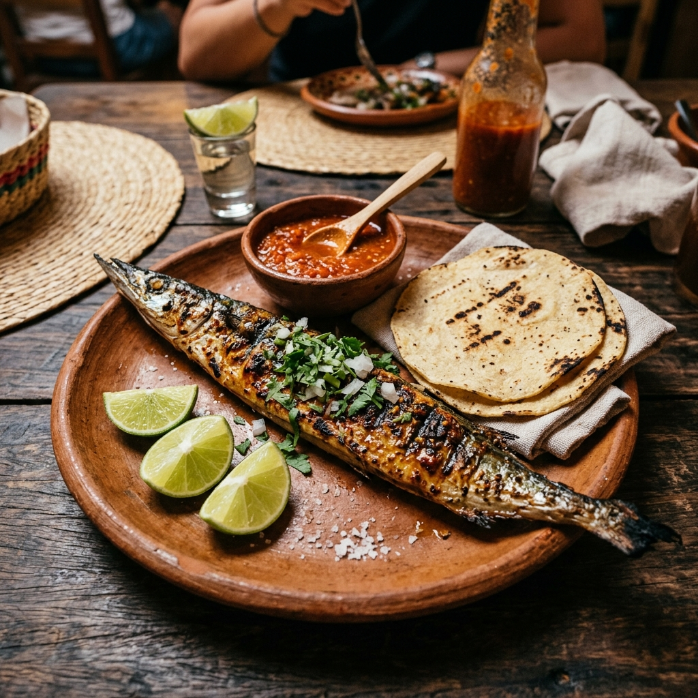

Dish

Foto: Gemini AIPejelagarto Asado
The ultimate signature dish of Tabasco. A prehistoric freshwater fish grilled slowly over open charcoal embers, served with traditional chimichurri salsa, lime, and fresh tortillas.